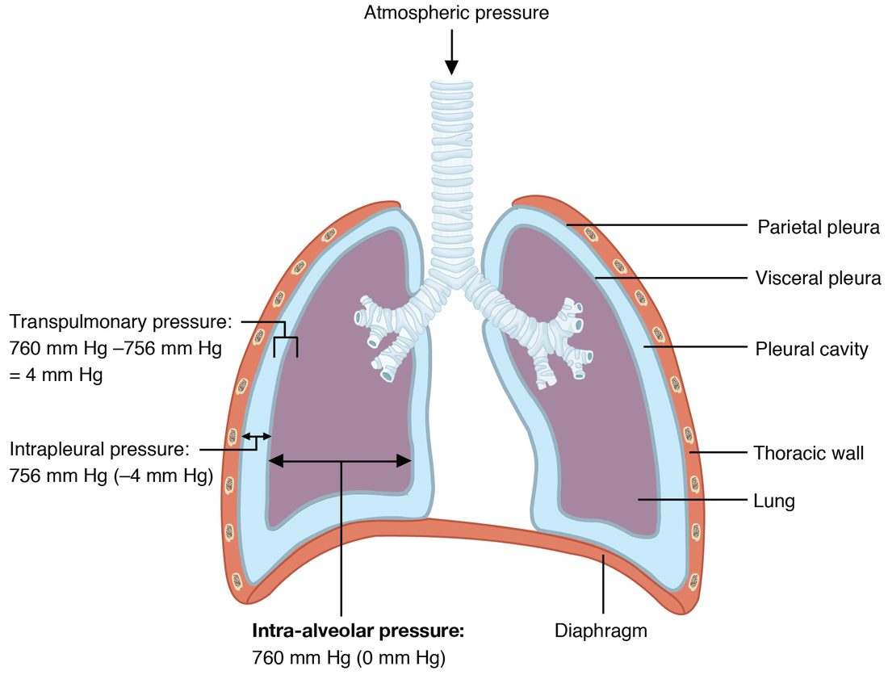
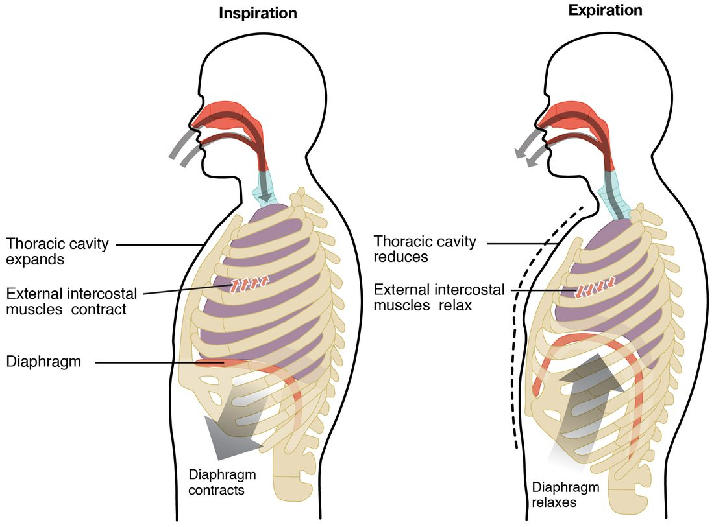
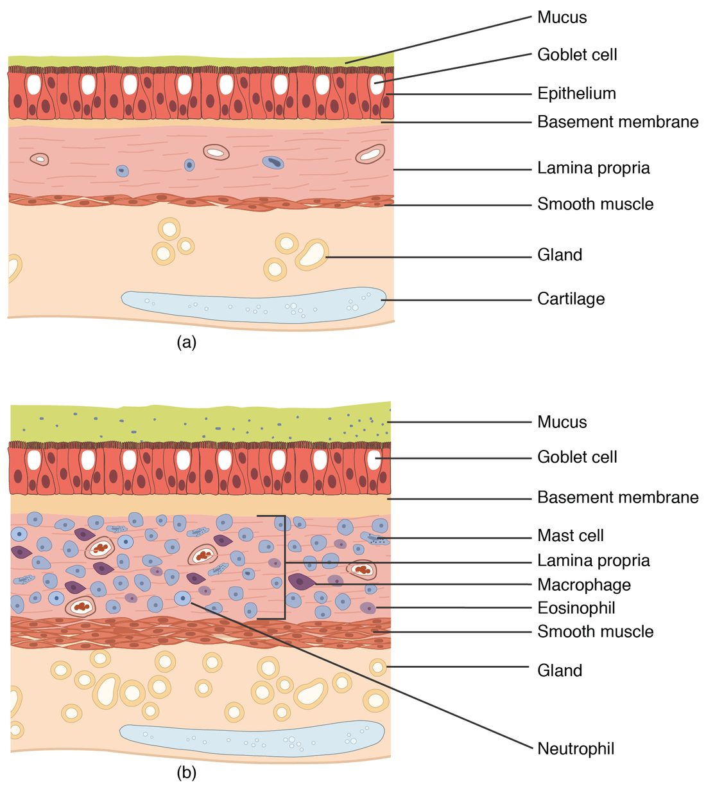

The mechanics of breathing come down to one rule from physics, Boyle's law, and three pressures: the pressure of the air around you, the pressure inside your alveoli, and the pressure in the thin film between your lungs and your chest wall. Your breathing muscles never push or pull air directly. They change the size of your chest; the pressures change; and air flows down the pressure gradient. This page builds that chain step by step: Boyle's law with worked examples, the pressures in ventilation, breathing in and breathing out, how the pressures change across one breath, what happens when air gets into the pleural cavity, and the two properties that set how hard breathing is: lung compliance, with surfactant, and airway resistance.
Air flows down a pressure gradient
You met the rule for any fluid in gradients and flow: a fluid flows from higher pressure to lower pressure, and the flow is the pressure difference divided by the resistance.
Flow = ΔP ÷ R
Air is a fluid, so the rule applies to breathing. Moving air in and out of your lungs is called pulmonary ventilation (pulmon- = lung, ventil- = to fan or air out), or simply breathing. For air to flow in, the pressure inside your alveoli must fall below the pressure of the air outside. For air to flow out, it must rise above it. Everything on this page is about how your body makes those small pressure differences, and what resists the flow they drive.
Boyle's law
Put your finger over the tip of a plastic syringe and pull the plunger out. You feel the plunger being sucked back in. Push it in instead, and you feel the trapped air pushing back. You have not added or removed any air; you changed only the space the air occupies, and its pressure changed in the opposite direction.
That is Boyle's law, named for the 17th-century chemist Robert Boyle: for a fixed amount of gas at a constant temperature, pressure and volume are inversely related. Double the volume and the pressure halves; halve the volume and the pressure doubles (Figure 1).
P₁ × V₁ = P₂ × V₂
Here P₁ and V₁ are the pressure and volume before the change, and P₂ and V₂ are the pressure and volume after it. The cause lies in the gas molecules. Pressure is the force of molecules striking the walls of their container. Give the same molecules more room and each part of the wall is struck less often, so pressure falls. Squeeze them into less room and they strike the walls more often, so pressure rises.

Worked example 1: pulling out a syringe plunger
Problem. A sealed syringe holds 20 mL of air at 760 mm Hg, the pressure of the air at sea level. You pull the plunger out until the volume is 25 mL. The temperature does not change. What is the new pressure inside?
- Write Boyle's law. P₁ × V₁ = P₂ × V₂.
- List what you know. P₁ = 760 mm Hg, V₁ = 20 mL, V₂ = 25 mL. P₂ is unknown.
- Rearrange for P₂. Divide both sides by V₂: P₂ = P₁ × V₁ ÷ V₂.
- Substitute. P₂ = 760 mm Hg × 20 mL ÷ 25 mL.
- Calculate. 760 × 20 = 15,200; 15,200 ÷ 25 = 608. The mL units cancel, leaving mm Hg.
- Check the direction. The volume went up, so the pressure must have gone down. 608 is less than 760, as expected.
Answer. 608 mm Hg. If you now took your finger off the tip, air would rush in, from 760 down to 608 mm Hg, until the pressures were equal.
Worked example 2: the same law in your lungs
Problem. At the end of a quiet breath out, the air in your lungs has a volume of about 2.400 L, at atmospheric pressure (760 mm Hg). Your breathing muscles start to contract and enlarge your lungs by 3 mL, to 2.403 L, before any new air has had time to flow in. What is the pressure in your alveoli now, and how does it compare with the air outside?
- Write Boyle's law. P₁ × V₁ = P₂ × V₂, so P₂ = P₁ × V₁ ÷ V₂.
- Use the same units for both volumes. V₁ = 2.400 L and V₂ = 2.403 L.
- Substitute. P₂ = 760 mm Hg × 2.400 ÷ 2.403.
- Calculate. 2.400 ÷ 2.403 = 0.99875. 760 × 0.99875 = 759.05, about 759 mm Hg.
- Compare with the outside. 759 − 760 = −1 mm Hg. The alveolar air is now 1 mm Hg below atmospheric pressure.
Answer. About 759 mm Hg, 1 mm Hg below the air outside. That tiny gradient is enough: air flows in through your airways until the pressures are equal again. A change in lung volume of only about one part in 800 drives a normal breath in.
Worked example 3: squeezing the lungs
Problem. Before a hard cough, you breathe in, close your vocal folds and contract your abdominal muscles hard. They squeeze the 4.0 L of air in your lungs down to 3.8 L before any escapes. The starting pressure is 760 mm Hg. What is the pressure now?
- Rearrange Boyle's law. P₂ = P₁ × V₁ ÷ V₂.
- Substitute. P₂ = 760 × 4.0 ÷ 3.8.
- Calculate. 760 × 4.0 = 3,040; 3,040 ÷ 3.8 = 800 mm Hg.
- Compare with the outside. 800 − 760 = +40 mm Hg.
Answer. 800 mm Hg, 40 mm Hg above atmospheric. When your vocal folds open, that large gradient blasts the air out.
The pressures in ventilation
Three pressures matter in breathing, and one difference between two of them (Figure 2). Because the changes are so small, physiologists usually write each pressure relative to the air outside: 0 means "equal to atmospheric pressure", −4 means "4 mm Hg below it".
- Atmospheric pressure is the pressure of the air around you: 760 mm Hg at sea level, lower at altitude. On the relative scale it is 0.
- Alveolar pressure (also called intrapulmonary or intra-alveolar pressure) is the pressure of the air inside your alveoli. Because the airways connect the alveoli to the outside, it always returns to atmospheric pressure, 0, whenever air stops flowing: at the end of each breath in and each breath out.
- Intrapleural pressure is the pressure in the film of pleural fluid between the visceral and parietal pleura. At rest it is about 4 mm Hg below atmospheric pressure (−4, or 756 mm Hg).
- Transpulmonary pressure (trans- = across) is the difference across the lung wall: alveolar pressure minus intrapleural pressure. It is the pressure that holds the lungs open. At rest it is 0 − (−4) = 4 mm Hg.

Why intrapleural pressure is below atmospheric
The lungs and the chest wall pull in opposite directions:
- The lungs are elastic. Their elastic fibers and the surface tension of the fluid lining their alveoli pull them inward, toward a smaller size.
- The chest wall, at rest, tends to spring outward, toward a larger size.
- The film of pleural fluid holds the two surfaces together, so neither can move away from the other.
- With the lung pulling one way and the chest wall pulling the other, the fluid film between them is stretched, and its pressure falls below atmospheric.
Think of two people pulling on opposite ends of a rope: the rope itself is under tension, not pressure. The pleural film is the rope. As long as intrapleural pressure is lower than alveolar pressure, transpulmonary pressure is positive and the lungs stay inflated against their own recoil.
Worked example 4: transpulmonary pressure
Problem. At the end of a quiet breath in, alveolar pressure is 760 mm Hg and intrapleural pressure is 754 mm Hg. What is the transpulmonary pressure? Express the two pressures on the relative scale too.
- Write the definition. Transpulmonary pressure = alveolar pressure − intrapleural pressure.
- Substitute absolute values. 760 − 754 = 6 mm Hg.
- Convert to the relative scale. Alveolar: 760 − 760 = 0. Intrapleural: 754 − 760 = −6.
- Check with relative values. 0 − (−6) = 6 mm Hg. Same answer.
Answer. 6 mm Hg, up from 4 at rest. The larger transpulmonary pressure is what holds the lungs at their larger size at the end of a breath in.
| Alveolar pressure | Intrapleural pressure | |
|---|---|---|
| Where | In the air inside the alveoli | In the fluid film between visceral and parietal pleura |
| At rest, between breaths | 0 (equal to atmospheric) | About −4 mm Hg |
| During a quiet breath in | Falls to about −1, then returns to 0 | Falls to about −6 |
| During a quiet breath out | Rises to about +1, then returns to 0 | Rises back to about −4 |
| Returns to atmospheric? | Yes, whenever airflow stops | No; below atmospheric throughout quiet breathing |
| What it drives | Airflow through the airways | Expansion of the lungs (through transpulmonary pressure) |
Inspiration
Inspiration (in- = in, spir- = breathe), also called inhalation, is breathing in. At rest you breathe quietly, about 12 to 20 times a minute, taking in about half a liter each time: this is quiet breathing. Quiet inspiration is active: it needs muscle contraction (Figure 3).
- The nerve signal. Neurons in the brainstem fire, and the signal travels down the phrenic nerves (from spinal segments C3 to C5) to the diaphragm and down the intercostal nerves to the external intercostal muscles.
- The diaphragm contracts. The dome-shaped diaphragm flattens and moves down, by 1 to 2 cm in a quiet breath. This lengthens the thoracic cavity and does most of the work of quiet inspiration.
- The ribs rise. The external intercostals pull the ribs up and out, like lifting a bucket handle, and push the sternum forward. This widens the thoracic cavity from side to side and from front to back.
- Intrapleural pressure falls. The chest wall moves outward, and because the pleural film holds the lung to it, the pull on the film increases. Intrapleural pressure falls from about −4 to about −6 mm Hg.
- The lungs expand. Transpulmonary pressure rises from 4 to about 6 mm Hg, stretching the lungs and enlarging the alveoli.
- Alveolar pressure falls. By Boyle's law, the larger alveolar volume lowers alveolar pressure to about −1 mm Hg.
- Air flows in. Air flows down the gradient from the atmosphere into the alveoli.
- Flow stops. As air enters, alveolar pressure climbs back to 0. When it equals atmospheric pressure, there is no gradient, and flow stops at the end of inspiration.

Deep, forced inspiration
When you gasp or exercise hard, forced breathing recruits accessory muscles that lift the rib cage further: the sternocleidomastoid and scalene muscles in the neck raise the sternum and the first two ribs, and the pectoralis minor pulls the upper ribs up when the shoulders are held still. The diaphragm moves down as much as 10 cm. Intrapleural pressure can fall to −20 mm Hg or lower, and much more air flows in. A patient working hard to breathe often braces on the arms and shows the neck muscles standing out: accessory muscles at work.
Expiration
Expiration (ex- = out), also called exhalation, is breathing out. One inspiration followed by one expiration is one respiratory cycle.
Quiet expiration is passive
In quiet breathing, you do not use any muscle to breathe out:
- The diaphragm and external intercostals relax.
- The stretched lungs recoil, pulled inward by their elastic fibers and by surface tension, and the chest wall settles back. The diaphragm rises into its dome.
- Thoracic and lung volume fall, and intrapleural pressure rises back from about −6 to about −4 mm Hg.
- By Boyle's law, the smaller alveolar volume raises alveolar pressure to about +1 mm Hg.
- Air flows out, down the gradient, until alveolar pressure is back to 0.
The diaphragm keeps a little tension early in expiration, which slows the recoil and smooths the flow, but no muscle pushes the air out. The energy for quiet expiration was stored during inspiration, as elastic energy in the stretched lungs, just as a stretched rubber band releases stored energy when you let go.
Forced expiration is active
When you blow out candles, cough or exercise, forced expiration uses muscles:
- The internal intercostals pull the ribs down and in.
- The abdominal wall muscles (rectus abdominis, external and internal obliques and transversus abdominis) squeeze the abdominal organs up against the diaphragm, pushing it higher into the chest.
Thoracic volume falls fast and far, alveolar pressure rises well above atmospheric, and air leaves quickly. During a hard forced expiration, intrapleural pressure can rise above atmospheric pressure. That squeezes the airways from outside as well as the alveoli; the next topics show why this limits how fast you can blow air out.
| Quiet breathing | Forced breathing | |
|---|---|---|
| Muscles of inspiration | Diaphragm and external intercostals | These, contracting harder, plus accessory muscles: sternocleidomastoid, scalenes, pectoralis minor |
| Muscles of expiration | None: passive elastic recoil | Internal intercostals and abdominal wall muscles |
| Diaphragm movement | About 1 to 2 cm | Up to about 10 cm |
| Intrapleural pressure | About −4 to −6 mm Hg | Can fall below −20 in inspiration; can rise above 0 in expiration |
| Alveolar pressure swings | About ±1 mm Hg | Much larger, tens of mm Hg |
| Air moved per breath | About 0.5 L | Several liters |
The pressures across one breath
Figure 4 puts everything together for one quiet breath of 4 seconds. The top graph shows the change in lung volume; the bottom graph shows the pressures relative to atmospheric.
![Two stacked graphs across one 4-second quiet breath. Top: lung volume rises from 0 to about 0.5 liters over the 2 seconds of breathing in and falls back to 0 over the 2 seconds of breathing out. Bottom: pressures in mm Hg relative to atmospheric pressure, shown as a flat line at 0. Alveolar pressure dips to about minus 1 at 1 second, is back to 0 at 2 seconds, rises to about plus 1 at 3 seconds and returns to 0 at 4 seconds. Intrapleural pressure falls from about minus 4 to about minus 6 during breathing in and rises back to about minus 4 during breathing out. A bracket at 2 seconds marks the transpulmonary pressure, 6 mm Hg; the gap between the two curves rises and falls with lung volume.](../figures/breath-pressures.svg)
Read it in four moments:
- 0 seconds, the start of inspiration. No air is flowing. Alveolar pressure is 0, intrapleural pressure is −4, and transpulmonary pressure is 4 mm Hg.
- 1 second, mid-inspiration. Alveolar pressure is at its lowest, −1 mm Hg. This is the steepest gradient, so air flows in fastest now, and lung volume is rising most steeply. Intrapleural pressure has already fallen to about −6, so transpulmonary pressure is about 5 mm Hg, matching a lung that is halfway through its breath.
- 2 seconds, the end of inspiration. Lung volume is at its largest, about 0.5 L above where it started. Alveolar pressure is back to 0, so flow has stopped. Intrapleural pressure is about −6, and transpulmonary pressure is 6 mm Hg, its largest, matching the largest volume.
- 3 seconds, mid-expiration. Alveolar pressure is at its highest, +1 mm Hg, so air flows out fastest. Intrapleural pressure has risen back to about −4, so transpulmonary pressure is about 5 mm Hg, the same as at the same volume on the way in.
Two points are easy to miss. First, the lowest alveolar pressure and the largest lung volume do not happen at the same moment: pressure is lowest while air is flowing in fastest, and volume is largest when flow has just stopped. Second, intrapleural pressure stays below atmospheric through the whole quiet breath, so the lungs stay inflated throughout.
Pneumothorax
A stab wound through the chest wall, a broken rib, or a burst air blister on the lung surface can let air into a pleural cavity. Air in the pleural cavity is a pneumothorax (pneumo- = air, thorax = chest), and the result is a collapsed lung:
- Air enters the pleural cavity, from outside through the chest wall or from the lung through a hole in the visceral pleura.
- The pleural film is broken, and intrapleural pressure rises toward atmospheric pressure (toward 0).
- Transpulmonary pressure falls toward 0, so nothing holds the lung open against its own recoil.
- The lung recoils toward its hilum and collapses; the chest wall on that side springs slightly outward.
- That lung no longer expands when the chest wall moves, so little air moves in and out of it.
Only one lung collapses, because each lung has its own pleural cavity. The person is short of breath and has sharp chest pain on that side; breath sounds are faint or absent there.
- A spontaneous pneumothorax happens without injury, when a small air blister on the lung surface bursts. It is most common in tall, thin young men and in smokers.
- A traumatic pneumothorax follows a penetrating wound, a broken rib, or a medical procedure that punctures the pleura.
- A tension pneumothorax is the dangerous form. The tear acts as a one-way valve: air enters the pleural cavity with each breath but cannot leave. Pressure in the cavity rises above atmospheric. The collapsed lung stops taking part in breathing, and the rising pressure pushes the mediastinum toward the other side, squeezes the other lung, and can compress the great veins and the heart, so venous return and cardiac output fall. This is a form of obstructive shock and can kill within minutes.
Treatment removes the air: a needle through the chest wall for a tension pneumothorax, then a chest tube connected to a one-way valve or gentle suction. As the air leaves, intrapleural pressure falls below atmospheric again, transpulmonary pressure is restored, and the lung re-expands.
Lung compliance and surfactant
Blow up a new balloon: the first breath is hard. Blow up one that has been stretched a few times: it is easy. The difference is how stretchable, or compliant, the balloon is.
Lung compliance (compli- = to fill up, yield) is how much the lung volume changes for each unit of change in transpulmonary pressure:
Compliance = ΔV ÷ ΔP
High compliance means the lungs inflate easily; low compliance means they are stiff, and the breathing muscles must work harder to move the same volume.
Worked example 5: lung compliance
Problem. During a quiet breath in, a healthy adult's transpulmonary pressure rises from 4 to 6 mm Hg and 0.5 L of air enters. Another patient, whose lungs are scarred, needs a rise from 4 to 12 mm Hg to take in the same 0.5 L. Calculate each person's lung compliance.
- Write the definition. Compliance = ΔV ÷ ΔP.
- Healthy adult: find ΔP. 6 − 4 = 2 mm Hg.
- Healthy adult: divide. 0.5 L ÷ 2 mm Hg = 0.25 L per mm Hg.
- Patient: find ΔP. 12 − 4 = 8 mm Hg.
- Patient: divide. 0.5 L ÷ 8 mm Hg = 0.0625 L per mm Hg.
- Compare. 0.25 ÷ 0.0625 = 4. The patient's lungs are four times stiffer.
Answer. 0.25 L/mm Hg and about 0.06 L/mm Hg. The patient's breathing muscles must generate four times the pressure change for each breath of the same size.
What sets lung compliance
Two things resist stretching the lungs:
- Elastic fibers in the alveolar walls and around the airways. Scar tissue (fibrosis) in the lungs makes them stiffer and lowers compliance. A disease that destroys elastic fibers, which you will meet later in this chapter, has the opposite effect: the lungs inflate easily but recoil weakly, so breathing out becomes the hard part.
- Surface tension of the thin film of water lining every alveolus. You met surface tension with the properties of water: water molecules at a surface pull toward each other, so the surface acts like a stretched sheet that tries to shrink. Lining hundreds of millions of curved alveoli, this pull tries to collapse them. In experiments where the lungs are filled with salt water instead of air, so there is no air-water surface, they inflate with far less pressure: surface tension accounts for more than half of the lungs' resistance to stretch.
Surfactant
You met surfactant with the alveoli: the film of lipids and proteins that type II alveolar cells secrete onto the fluid lining the alveoli. Its amphipathic phospholipids sit at the air-water surface, push between the water molecules and weaken their pull on each other. For breathing, that has three effects:
- Surface tension falls, so compliance rises and each breath takes less work.
- Small alveoli are protected most. When an alveolus shrinks during expiration, its surfactant film is packed more tightly, so surface tension falls further, just when a small, curved alveolus would otherwise be most likely to collapse. That keeps alveoli of different sizes open side by side.
- Less fluid is drawn into the alveoli, because a strong surface tension would also pull fluid out of the capillaries into the alveolar space.
As you saw with the alveoli, type II cells usually make enough surfactant only by about 34 to 36 weeks of pregnancy. A baby born much earlier has too little. Its lungs are stiff, many alveoli collapse at the end of every breath, and the baby must pull hard to reopen them with each breath: the ribs and the soft tissue between them are sucked inward, and the baby grunts and breathes fast. Treatment gives surfactant down a tube into the trachea. When an early birth is expected, giving the mother a glucocorticoid speeds the baby's type II cells toward making surfactant.
Thoracic wall compliance
Breathing stretches the chest wall as well as the lungs. Thoracic wall compliance is how easily the chest wall expands. Anything that stiffens it lowers total compliance and makes breathing harder: severe obesity, which loads the chest and abdomen; a stiff, curved spine; joints between the ribs and vertebrae stiffened by arthritis; or thick scars from burns across the chest.
Airway resistance
Try breathing through a drinking straw: you can do it, but you have to work much harder. The straw adds resistance. Airway resistance is the opposition to airflow through the airways, and it follows the same rule you met in gradients and flow: resistance depends on the fourth power of the radius (Poiseuille's law). Halve the radius of a tube and its resistance rises 2⁴ = 16 times.
Worked example 6: narrowing an airway
Problem. Air flows through an airway at 1.0 L/s when the pressure difference along it is 1 mm Hg. Its smooth muscle then contracts, and its radius falls to half. (a) By how much does its resistance change? (b) What flow does the same 1 mm Hg drive now? (c) What pressure difference would restore 1.0 L/s?
- Write the rule. Resistance is proportional to 1 ÷ r⁴.
- Find the change in resistance. New radius = r ÷ 2, so r⁴ becomes r⁴ ÷ 2⁴ = r⁴ ÷ 16. Resistance, which is 1 ÷ r⁴, rises 16-fold.
- Write the flow equation. Flow = ΔP ÷ R.
- Find the new flow. ΔP is unchanged and R is 16 times larger, so flow = 1.0 L/s ÷ 16 = 0.0625 L/s.
- Find the pressure needed. Rearrange: ΔP = Flow × R. To restore 1.0 L/s with 16 times the resistance, ΔP must be 16 × 1 mm Hg = 16 mm Hg.
Answer. (a) 16 times higher. (b) About 0.06 L/s, one sixteenth of the flow. (c) 16 mm Hg, so the breathing muscles would have to work far harder.
Where the resistance is
You might expect the tiniest airways to resist flow most. In healthy lungs they do not. There are so many bronchioles, side by side, that their combined cross-sectional area is huge, and air moves through them slowly. Most of the resistance lies in the medium-sized bronchi. But bronchioles have no cartilage, so in disease they are the airways that narrow most, and small changes in their radius, raised to the fourth power, matter.
The airways also widen as the lungs expand, because the stretched lung tissue around them pulls their walls outward. So resistance is a little lower during inspiration and higher during expiration.
Bronchoconstriction and bronchodilation
Bronchoconstriction is the narrowing of bronchi and bronchioles by contraction of their smooth muscle; bronchodilation is their widening by relaxation of it.
| Bronchoconstriction | Bronchodilation | |
|---|---|---|
| Airway smooth muscle | Contracts | Relaxes |
| Airway radius | Smaller | Larger |
| Airway resistance | Higher | Lower |
| Autonomic signal | Parasympathetic: acetylcholine from the vagus nerve on muscarinic receptor proteins | Epinephrine from the adrenal medulla on beta-2 receptor proteins |
| Local chemical signals | Histamine and leukotrienes from mast cells; irritants and cold air | Nitric oxide |
| Drugs that cause it | Beta blockers that also block beta-2 receptor proteins can trigger it in people with asthma | Albuterol (a beta-2 agonist); muscarinic antagonists such as atropine-like inhalers |
Human airway smooth muscle receives few sympathetic nerve fibers. Its beta-2 receptor proteins respond mainly to epinephrine circulating in the blood, which is why injected epinephrine opens the airways in a severe allergic reaction.
Asthma
Asthma (Greek for panting) is a chronic inflammatory disease of the airways in which the bronchi and bronchioles narrow too easily and too much. Between attacks, breathing may be normal. During an attack, a trigger such as an allergen, cold air, exercise, smoke or a viral infection sets off three changes at once (Figure 5):
- Smooth muscle contracts: bronchoconstriction. In allergic asthma, the allergen binds IgE on mast cells in the airway wall (a type I hypersensitivity), and the mast cells release histamine and leukotrienes, which contract the muscle.
- The airway wall swells: the inflamed mucosa thickens with fluid and with invading white blood cells such as eosinophils.
- Thick mucus plugs the lumen, made by extra goblet cells and glands.

All three shrink the radius, and the fourth-power rule turns a modest narrowing into a large rise in resistance. The effects follow:
- At the same pressure difference, less air flows. The person must contract the breathing muscles harder, including the accessory muscles, to move enough air.
- Breathing out suffers most. During expiration the lungs shrink and stop pulling the airways open, and in forced expiration the rising pressure around the airways squeezes them, so narrowed airways close off early and air is trapped in the alveoli.
- Air forced through the narrowed airways makes a whistling wheeze, loudest when breathing out.
Treatment follows the mechanism. An inhaled beta-2 agonist such as albuterol relaxes the smooth muscle within minutes. Inhaled glucocorticoids, taken daily, calm the inflammation and make attacks less likely. In a severe attack, injected epinephrine acts on beta-2 receptor proteins throughout the airways.
Putting it together
Every breath follows one chain: a nerve signal contracts the muscles, the thorax enlarges, intrapleural pressure falls, transpulmonary pressure rises and the lungs expand, alveolar pressure falls by Boyle's law, and air flows in down its pressure gradient until the gradient is gone. How much work that takes depends on compliance, set by elastic fibers and by surface tension, which surfactant lowers, and on airway resistance, set mainly by airway radius. The next topic measures the volumes of air that this machinery moves.